General info:
Human PetsHumans use the vanilla DF pets, so everything should be very straightforward. Your civ might also tame locally available animals, for example a test-fort had access to tame elephants. 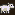 ::: Sheep ::: Price 51 Smallish quadruped that can be sheared for fleece, giving 3 units of thread/cloth each time. 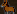 ::: Donkey ::: Price 101 Large quadruped which is mostly farmed for meat and leather. Can carry tradegoods. 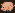 ::: Pig ::: Price 51 Smallish quadruped which is mostly farmed for meat and leather. 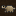 ::: Cavy ::: Price 11 Small rodent, farmed for meat. 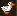 ::: Duck ::: Price 16 Smallish bird that lays eggs and can give feathers when butchered. Mostly used for relyable food production. 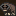 ::: Water Buffalo ::: Price 101 Large and strong quadruped, farmed for meat and leather. Can carry goods and pull wagons. 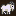 ::: Goat ::: Price 16 Smallish quadruped that can be milked. Farmed for cheese production, as well as meat.
Small bird that lays eggs and can give feathers when butchered. Mostly used for relyable food production. 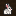 ::: Rabbit ::: Price 11 Small rodent, farmed for meat.
Small bird that lays eggs and can give feathers when butchered. Mostly used for relyable food production. 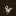 ::: Turkey ::: Price 16 Smallish bird that lays eggs and can give feathers when butchered. Mostly used for relyable food production. 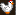 ::: Chicken ::: Price 16 Smallish bird that lays eggs and can give feathers when butchered. Mostly used for relyable food production. 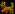 ::: Dog ::: Price 16 Medium sized canine, usually bought as guard animal. Can be trained for the hunt or war. In addition can learn combat skills and can be armored in either iron or steel, unlocked by the farmers guild. These upgrades also affect the attack power of the animal. 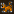 ::: Cat ::: Price 11 Small feline, usually bought for pest control. Adopts its owner and hunts vermin. Great backup food source. Kitten meat burgers are great. 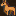 ::: Horse ::: Price 101 Large quadruped, usually used as pack or pull animal. Can also be armored in iron or steel in the war kennels, unlocked by the farmers guild. 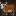 ::: Cow ::: Price 151 Large quadruped, which can be milked. Usually farmed for meat and leather. |